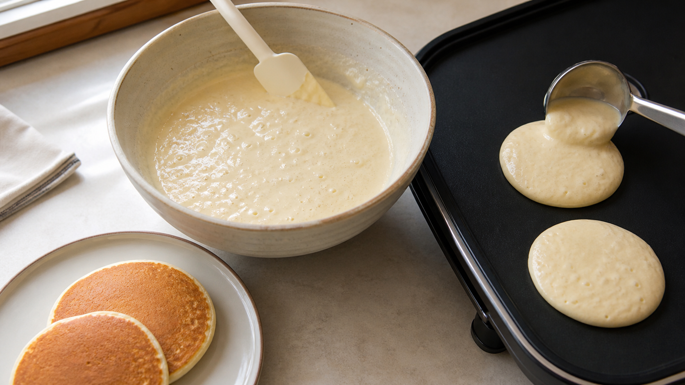

パンケーキ生地は、混ぜたら10分待つ？ 吸水と気泡のせめぎ合い
最初の一枚だけ薄く、最後の一枚は妙に厚い。
同じボウルから焼いたのに、パンケーキの形がそろわないことがある。腕の差に見えるが、生地の中では時間とともに二つの変化が同時に進んでいる。
粉は水を受け取って生地を少しずつ濃くする。一方、ベーキングパウダーは水に触れると、膨らませるガスを作り始める。
今日の結論
普通のベーキングパウダーを使うなら、混ぜすぎず、まず5〜10分だけ休ませてから焼くのは試す価値がある。生地の流れが落ち着き、最初と最後の一枚をそろえやすくなる可能性がある。
ただし、「10分休ませれば必ず高く、ふわふわになる」とまでは言えない。粉の種類、牛乳と卵の量、ベーキングパウダーに含まれる酸の種類、室温で結果は変わる。重曹とヨーグルトやレモンを組み合わせた生地なら、待たずに焼くほうが理にかなう。
粉は、水に触れた瞬間に完成しない
小麦粉へ牛乳を入れると、粉の粒の表面から水が入る。でんぷんやたんぱく質、傷ついたでんぷん、食物繊維は、それぞれ違う速さと量で水を抱える。
この水の取り込みを吸水（きゅうすい）と呼ぶ。乾いたスポンジへ水を落とすと、表面から内側へじわじわ広がるのに似ている。実際の粉はスポンジではないが、「混ぜ終わった瞬間にも水の移動は続く」と考えるとわかりやすい。
13種類の小麦粉でパンケーキを比べた研究では、水を抱えやすい粉の性質やたんぱく質の量・質が、生地の粘り、焼いたパンケーキの直径、高さ、弾力と関係していた。研究では生地を20秒混ぜ、2分休ませてから測り、190℃の鉄板で片面90秒ずつ焼いている。
この研究は「2分と10分のどちらが良いか」を比べたものではない。それでも、パンケーキの形が粉の吸水と生地の流れに強く左右されることは示している。
待つと生地は変わる。でも、おいしさが必ず上がるわけではない
待ち時間を直接変えたパンケーキ研究もある。
インドのパンケーキに近いpuraの生地を調べた研究では、25±2℃で置いた甘い生地の粘りは1時間後に上がり、その後2時間はほぼ一定だった。塩味の生地も、作りたてから1時間までに粘りが増えた。
ただし、4時間までの総合的な好ましさには有意な差がなかった。しかも、この生地は牛乳からチーズを作った後に残る乳清を多く使う特殊な配合だ。家庭のホットケーキミックスや薄力粉へ、そのまま1時間という数字を移すことはできない。
言えるのは、「生地の粘りは待ち時間で動くことがある」までだ。「待てば必ずおいしくなる」ではない。
その間、膨らませるガスも動いている
ベーキングパウダーは、炭酸水素ナトリウムと酸性の材料を組み合わせて、二酸化炭素の泡を作る。水を入れると両者が出会い、反応が始まる。
4種類の酸を使った化学膨張剤の研究では、27℃と39℃の生地で二酸化炭素が出る速さを測った。反応の進み方は酸の種類によって異なり、一つの共通した速さでは説明できなかった。
ここが重要だ。
「生地を休ませると、粉が水を吸うから良い」だけでは半分しか見ていない。同じ時間にガスも作られ、泡の一部は生地から逃げうる。市販のベーキングパウダーには、水で反応しやすい成分と加熱で反応しやすい成分を組み合わせた製品もあるが、配合は製品ごとに違う。
だから、休ませるなら短くする。長く作り置きするより、5〜10分を比較の出発点にする。
2枚だけ焼けば、自分の粉で答えが出る
材料（直径10〜12cm、約6枚分）
- 薄力粉 150g
- 砂糖 20g
- ベーキングパウダー 6g
- 塩 1g
- 卵 1個（正味約50g）
- 牛乳 130g
- 植物油 10g
- 焼くための植物油 少量
作り方
- ホットプレートを180℃に予熱する。フライパンなら弱めの中火で温め、濡れ布巾へ一度置いて温度をならす。
- ボウルで薄力粉、砂糖、ベーキングパウダー、塩を混ぜる。別の器で卵、牛乳、植物油を混ぜる。
- 液体を粉へ一度に加え、へらで底から返す。粉が見えなくなったら止める。小さなだまは残ってよい。
- タイマーを開始する。生地を同じ重さに二つへ分ける。
- Aはすぐ50gを焼く。表面に泡が出て縁が乾いたら返し、反対側も焼く。
- Bはふたをして、混ぜ終わりから10分後に同じ50gを同じ温度で焼く。待った後は泡をつぶすように混ぜ直さず、へらで一度だけ底を返す。
焼けたら、直径、中央の厚さ、断面の穴、口当たりを比べる。待ったBのほうが流れにくければ、吸水が進んで粘りが変わった可能性がある。厚さが増えるかは、粉と膨張剤の組み合わせ次第だ。
失敗を減らす三つの線引き
まず、重曹へヨーグルト、レモン汁、酢などを合わせる生地は、酸と塩基が水の中ですぐ出会う。長く休ませず、混ぜたら焼く。
次に、休ませた後に激しく混ぜ直さない。せっかくできた泡を壊し、粉のたんぱく質をさらにこねることになる。固さを調整するなら、牛乳を小さじ1ずつ加え、へらで静かに合わせる。
そして、生の生地を味見しない。米国疾病予防管理センターは、加熱前の小麦粉と卵を含むパンケーキ生地を食べないよう案内している。卵と牛乳を入れた生地を室温に長く置かず、すぐ焼かない場合は冷蔵する。要冷蔵食品を室温に置く上限は2時間、気温32℃超では1時間が公的な目安だ。
10分は正解ではなく、比較の基準
パンケーキ生地を休ませる話は、つい「グルテンが休むからふわふわになる」の一言で終わりやすい。
実際には、粉が水を受け取って生地の流れが変わる。その横で、膨張剤からガスが生まれる。二つの時計が同時に進む。
今回確認した資料では、家庭の薄力粉パンケーキについて、0分、5分、10分を直接比べて10分を最適とした試験は見つからなかった。だから、数字を断言するより、自分の粉とベーキングパウダーで一枚ずつ比べるほうが確かだ。
まず10分だけ待つ。すぐ焼いた一枚と比べる。良くなければ、次は待たない。
料理科学は、正解を覚えるためではない。自分の台所で、変えた条件を一つだけ確かめるために使える。
参考文献
- Kang CS, et al. *Influence of physicochemical characteristics of flour on pancake quality attributes*. Journal of Food Science and Technology. 2019;56:1497-1505. https://pmc.ncbi.nlm.nih.gov/articles/PMC6423256/
- Jindal AR, Shoree M, Shukla FC. *Effect of different time intervals on the viscosity of batter and on the sensory qualities of puras (pancakes) prepared using chhana and paneer whey*. International Journal of Dairy Technology. 2004;57:227-230. https://doi.org/10.1111/j.1471-0307.2004.00140.x
- Bellido GG, Scanlon MG, Sapirstein HD, Page JH. *Use of a Pressuremeter To Measure the Kinetics of Carbon Dioxide Evolution in Chemically Leavened Wheat Flour Dough*. Journal of Agricultural and Food Chemistry. 2008;56(21):9855-9861. https://doi.org/10.1021/jf801125f
- Food Standards Agency. *Pancake Reformulation and Technical Guidance*. https://www.food.gov.uk/sites/default/files/media/document/Pancake%20technical%20reformulation%20guidance%20-%20final%20document.pdf
- Centers for Disease Control and Prevention. *Raw Flour and Dough*. https://www.cdc.gov/food-safety/foods/no-raw-dough.html
- U.S. Department of Agriculture, Food Safety and Inspection Service. *Keep Food Safe! Food Safety Basics*. https://www.fsis.usda.gov/food-safety/safe-food-handling-and-preparation/food-safety-basics/steps-keep-food-safe
※本記事は家庭調理の食感と食品安全を扱う一般情報であり、病気の予防や治療効果を示すものではない。小麦、卵、乳にアレルギーがある人は材料を避けること。